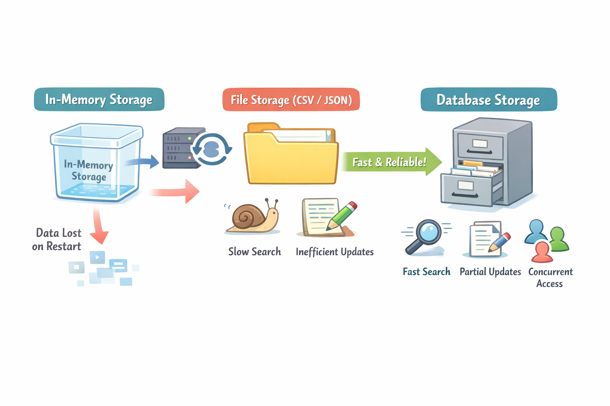
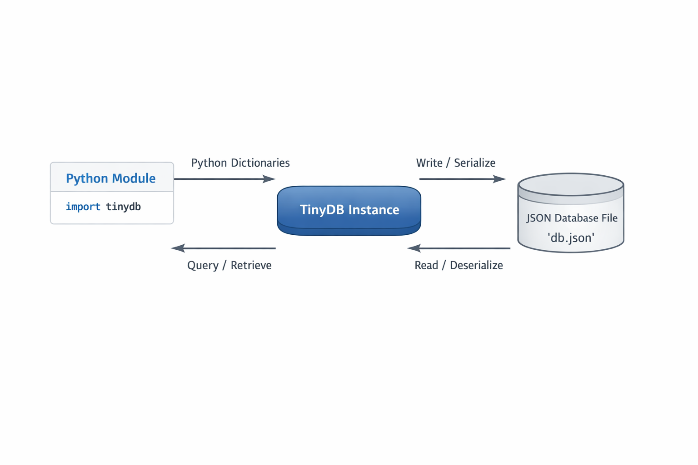
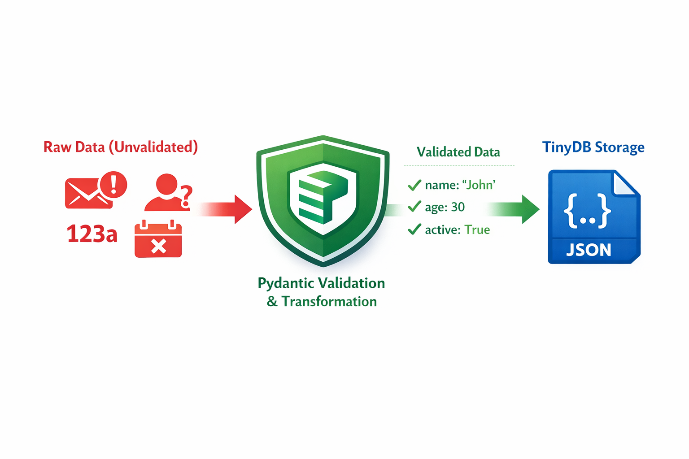
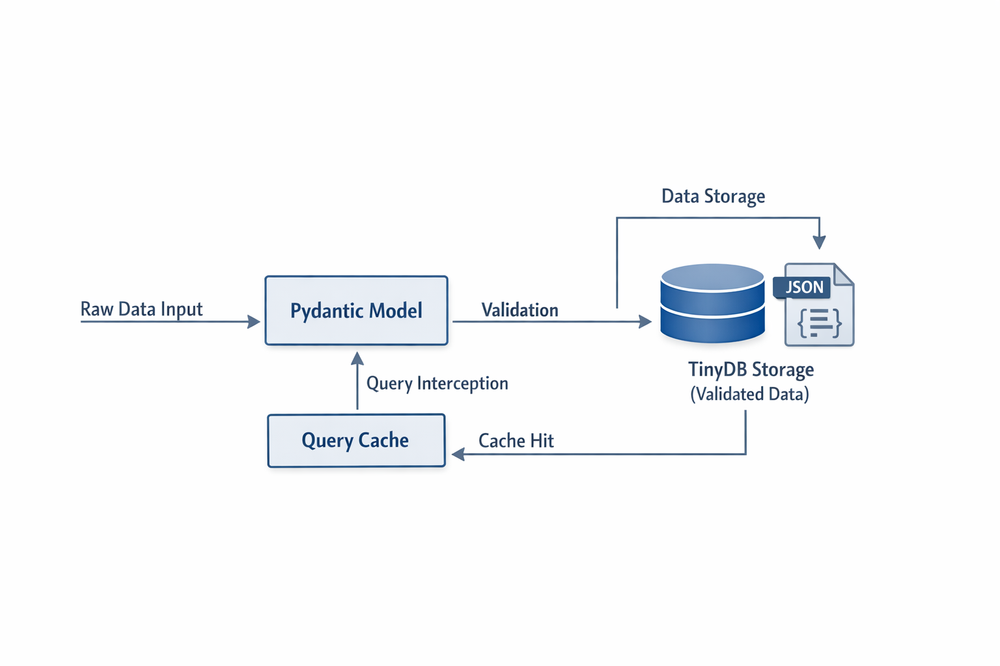
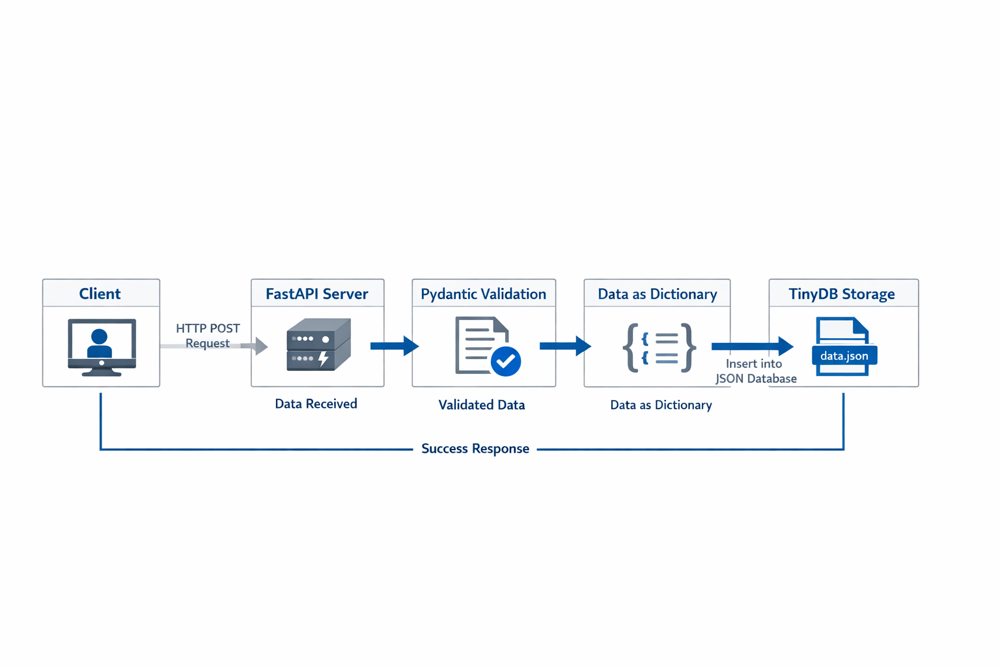
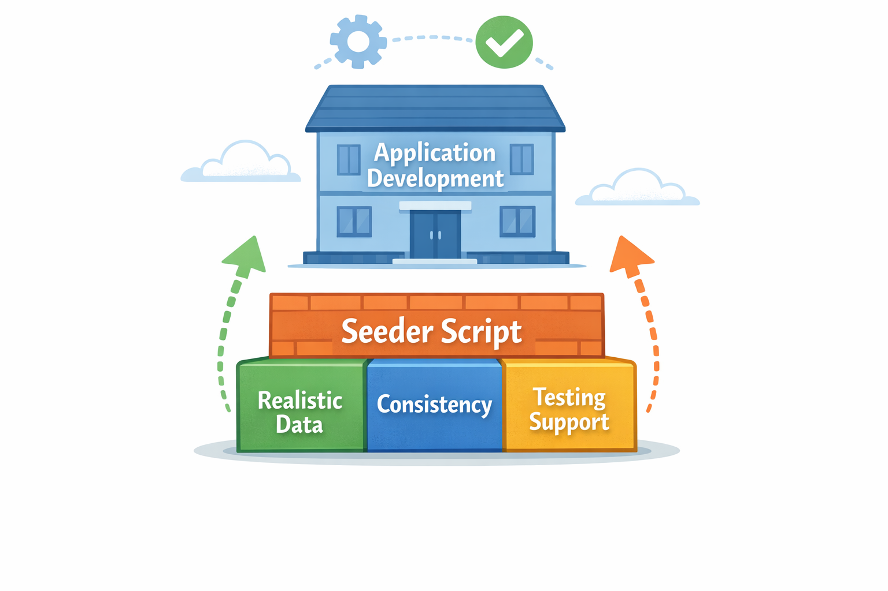
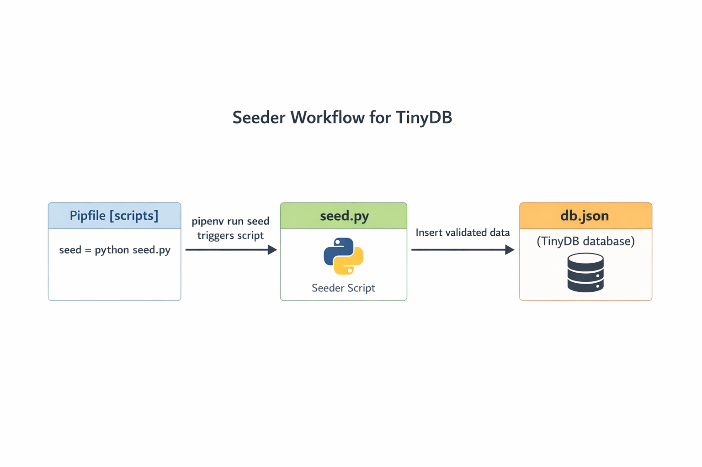

Clase 36:
Storing data in light databases
Presentación interactiva y concisa: 1 párrafo corto al grano por tema, analogías directas y código ejecutable.
📊 ¿Por qué Almacenar Datos?: Diagrama Visual
"El programa sigue instrucciones paso a paso para completar su objetivo sin fallar."
Imagina que estás construyendo una API de contactos donde los usuarios agregan contactos durante una sesión.
- El almacenamiento en memoria pierde todos los datos al reiniciar el servidor.
- El almacenamiento en archivos persiste los datos pero es lento y no seguro...
- Las bases de datos ofrecen persistencia rápida, estructurada y segura.

¿Por qué Almacenar Datos?📊 Introducción a TinyDB: Diagrama Visual
"El programa sigue instrucciones paso a paso para completar su objetivo sin fallar."
Imagina convertir tu aplicación Python en un programa que recuerda todo lo que guardas, incluso después de que deja de ejecutarse.
- Instala TinyDB con `pipenv install tinydb`.
- Crea una instancia de base de datos con `db = TinyDB('db.
- TinyDB almacena diccionarios de Python como JSON en un archivo.

Introducción a TinyDB💻 Insertar y Guardar Registros: Código en Vivo
"El programa sigue instrucciones paso a paso para completar su objetivo sin fallar."
Imagina que tienes un cuaderno donde anotas contactos, pero cada vez que agregas un nuevo contacto, el cuaderno asigna...
from tinydb import TinyDB
db = TinyDB('db.json') # Crea o abre el archivo JSON💻 Búsqueda y Filtrado de Datos: Código en Vivo
"El programa sigue instrucciones paso a paso para completar su objetivo sin fallar."
Imagina que tienes un cajón lleno de fichas, cada una representando un contacto con campos como nombre,...
from tinydb import TinyDB, Query
db = TinyDB('db.json')
Contact = Query()💻 Actualizar y Eliminar Registros: Código en Vivo
"El programa sigue instrucciones paso a paso para completar su objetivo sin fallar."
Imagina que tienes una agenda digital donde no solo puedes buscar contactos, sino también actualizar sus detalles o eliminarlos...
from tinydb import TinyDB, Query
db = TinyDB('db.json')
Contact = Query()
db.update({'email': 'ana.new@mail.com'}, Contact.name == 'Ana')📊 Pydantic como Capa de Esquema: Diagrama Visual
"El programa sigue instrucciones paso a paso para completar su objetivo sin fallar."
Imagina los datos de tu aplicación como invitados que llegan a una fiesta.
- TinyDB almacena datos sin imponer estructura.
- Los modelos de Pydantic definen y hacen cumplir el esquema de datos esperado.
- Valida los datos sin procesar con Pydantic antes de insertarlos en TinyDB.

Pydantic como Capa de Esquema📊 Antipatrones de Almacenamiento: Diagrama Visual
"El programa sigue instrucciones paso a paso para completar su objetivo sin fallar."
¿Alguna vez te has preguntado por qué algunas bases de datos se vuelven desordenadas y lentas con el tiempo? A menudo, es debido...
- Siempre valida los datos con Pydantic antes de insertarlos en TinyDB.
- Usa un esquema único para mantener los nombres de campos consistentes.
- Evita consultas redundantes almacenando en caché los resultados dentro del...

Antipatrones de Almacenamiento📊 TinyDB en Endpoints de FastAPI: Diagrama Visual
"El programa sigue instrucciones paso a paso para completar su objetivo sin fallar."
En aplicaciones del mundo real, la persistencia de datos es esencial.
- TinyDB ofrece una base de datos basada en archivos y sin configuración que...
- Los modelos Pydantic validan los datos entrantes antes de que lleguen a la...
- Inicializar la instancia de TinyDB a nivel de módulo comparte la base de datos entre todos los...

TinyDB en Endpoints de FastAPI📊 ¿Qué es un Seeder?: Diagrama Visual
"El programa sigue instrucciones paso a paso para completar su objetivo sin fallar."
En el desarrollo de software, especialmente cuando se trabaja con bases de datos, contar con un conjunto consistente y realista...
- Realistas pero falsos: Imitan datos del mundo real sin contener información...
- Estructurados: Siguen el esquema o modelo de datos esperado de tu aplicación.
- Consistentes: Proporcionan un punto de partida confiable para el desarrollo,...

¿Qué es un Seeder?📊 Ejecutando Seeders con Pipenv: Diagrama Visual
"El programa sigue instrucciones paso a paso para completar su objetivo sin fallar."
Crear y ejecutar seeders es un paso esencial para poblar tu base de datos TinyDB con datos iniciales y validados.
- Crea un script `seed.
- Usa modelos Pydantic para garantizar la consistencia de datos antes de la...
- Limpia los datos existentes con `db.

Ejecutando Seeders con Pipenv🎯 Resumen de Patrones de Persistencia: Cumplimiento de Meta
Ahora has dominado el flujo de trabajo esencial que lleva tus aplicaciones desde la memoria volátil hasta un almacenamiento de...
Operaciones CRUD:
Crear: Insertar nuevos registros.
💻 Práctica en Clase: Ejercicio Práctico
Desarrolla el ejercicio práctico aplicando persistencia de datos en TinyDB, esquemas Pydantic y endpoints de FastAPI.
ai-eng-supplier-directory
Python • FastAPI • TinyDB • Pydantic
API persistente con validación y seeders